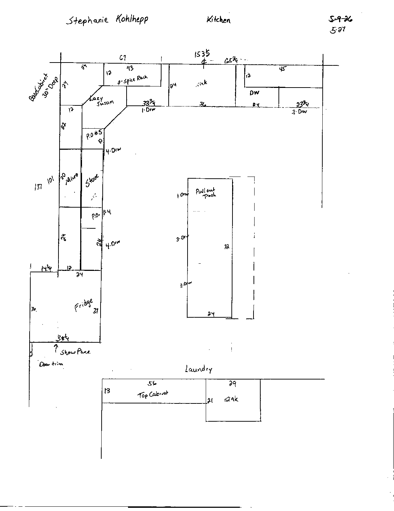
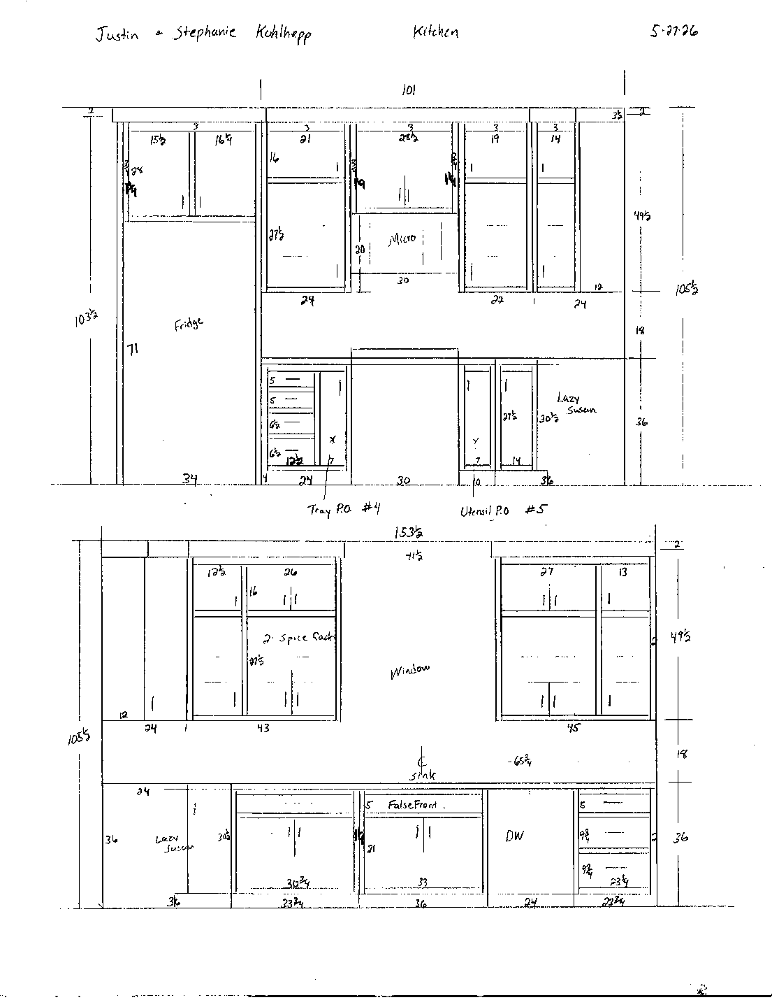
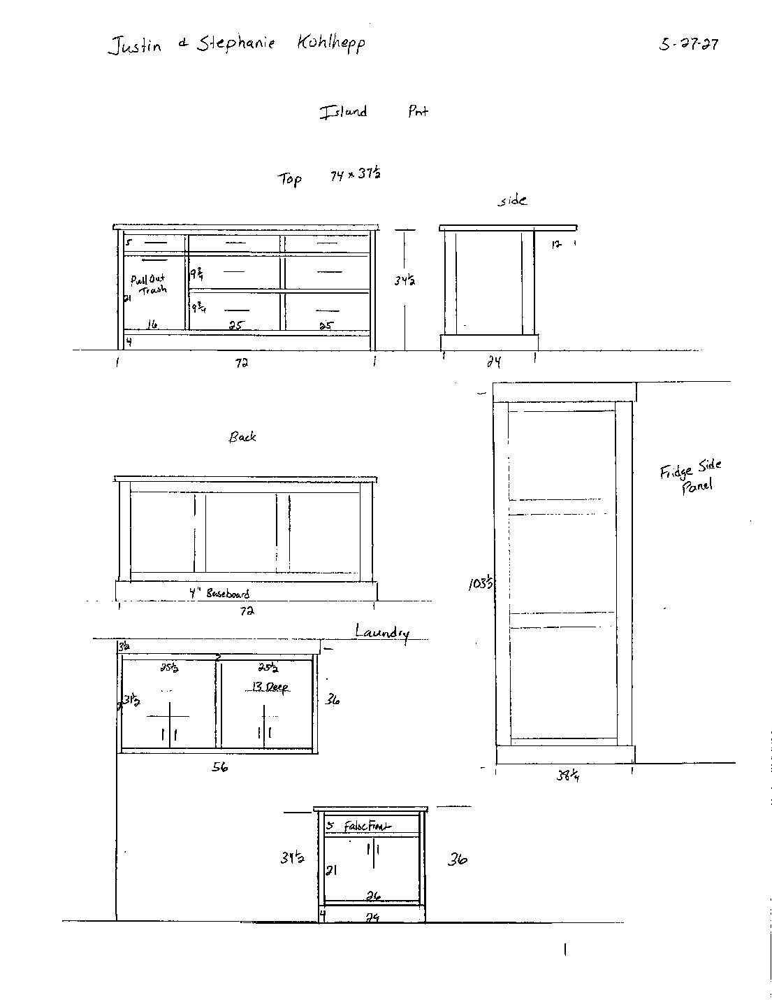

Drawings from the cabinet maker (revision dated 5/27/26, sent July 2026): floor plan, wall elevations, island, fridge panel and the laundry/mud room cabinets. Tap a sheet to see it full size. Download the drawings (PDF).



The drawings were made for the LG LF25H6330S. We bought the GE GNE25JYKFS instead.
Width: 32¾″ fridge in a 34″ opening. Fine: GE asks for ⅛″ per side.
Height: the opening is 71″. The GE is 69⅞″ to the top of the doors and needs 1″ of air above it, so it needs 70⅞″. That leaves only ⅛″ to spare. If the 71″ is measured from today's floor and the new tile (about ½″ with mortar) runs under the fridge, it won't fit with the required clearance.
Door swing: the fridge sits between a 38¼″-deep side panel and the base-cabinet run. With the required 2″ gap behind it, the GE door fronts land about 37″ from the back wall, so the panel sticks out past the doors. GE lists the fridge as 40⅞″ wide with both doors open 90°, which means each door swings about 4″ past the side of the fridge. With only about ⅝″ of gap, a panel that sticks out past the door face can keep the doors from opening fully, and the crisper drawers need the doors open fully to slide out. The cabinet maker's own note asks us to double-check the fridge area; this is likely why.
The opening is drawn 30″ wide × 20″ tall. The GE Profile PVM9225 is 29⅞″ × 17¼″ and hangs from the cabinet above it. With a 20″ opening, its bottom sits about 2¾″ higher than the bottoms of the neighboring upper cabinets: roughly 57″ off the floor and 21″ above the cooktop.
Dropping the cabinet above to about 71¼″ off the floor lines the microwave up with the other uppers at 54″. That still leaves 35″ between the cooktop and the cabinet (GE's minimum is 30″). Lower also means better capture of steam and smoke.
The top is 74″ × 37½″ over 72″ × 24″ cabinets, which leaves about 12″ of overhang for knees. That's the minimum for counter-height stools (15″ is typical), and 74″ seats 3 stools at 24″ spacing, not the 4 in the inspiration photo. A 12″ overhang is also near the limit for unsupported 3 cm stone. Ask the countertop fabricator whether hidden steel supports are needed.
The drawings don't show the distance from the island to each cabinet run. Confirm at least 42″ (48″ if two people cook at once), measured from countertop edges and handles, not cabinet boxes.
The drawings show a 56″ × 31½″ × 13″-deep wall cabinet and a 29″-wide × 21″-deep sink base, the same footprint as today. The existing granite is being replaced with the kitchen countertop material (about 5 sq ft plus a sink cutout), so have the fabricator template it along with the kitchen.
The heated-floor mat should stop at the cabinet footprint, not run under the cabinets.
Sink base (36″) is centered on the window: the centerline is 65¾″ from the end of the run in both the plan and the elevation. Dishwasher opening is 24″, next to the sink. Range opening is 30″ for the slide-in, with a tray pullout and a utensil pullout on either side. The microwave spot is directly above the range. Upper cabinets are 49½″ tall with 2″ of crown molding to the 105½″ ceiling.
| Run | Size | Sq ft |
|---|---|---|
| Sink/window wall | 153½″ × 25½″ | 27.2 |
| Range wall (excluding the corner and the 30″ range) | 58½″ × 25½″ | 10.4 |
| Island | 74″ × 37½″ | 19.3 |
| Kitchen total | ≈ 57 | |
| Mud room sink top (new, same material) | about 29″ × 22½″ + backsplash trim | ≈ 5 |
| All countertops | ≈ 62 |
Assumes 24″ base cabinets with a 1½″ countertop overhang, and a tiled backsplash (no stone backsplash). The fabricator's template sets the final numbers. The budget and tracker use these same 57 + 5 sq ft. See the layout in 3D on the Kitchen Mockups page.